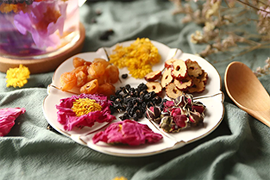

当前位置：主页 > 关于我们
花语饮品起源于安徽芜湖一条名叫老街的小巷一家名叫花赞的饮品小店， 在咋二甲只有20平方米的小店里（现已结业）我们专注于创造出自己真正喜爱的茶饮。 我们希望用一杯好茶，激发你的一份灵感。 后来由于喜爱的人越来越多我们开始开设分店。

-
原料
- 1.完全进口奶源，0反式脂肪，喝的健康
- 2.原茶花茶，茶叶，现泡好茶，拒绝茶包，茶粉
- 3.木薯粉制弹口珍珠，吃的放心
- 4.日本宇治县进口抹茶
- 5.鲜花经特殊烘焙工艺，锁住回甘并带来特殊烤香
- 6.茉莉花四次以上熏香，清新自然，完全不添加茉莉香精
-
产品
- 1.独家花芬奶盐系列为长江三角洲地区首创，至今诸多店铺模仿推出
- 2.原味奶茶使用上等独家比例拼配奶茶，茶叶经特殊烘焙工艺，回甘明显
- 3.蛋糕茉莉奶茶加入鲜奶打成的特制蛋糕酱，奶香浓郁口感顺滑
- 4.港式玫瑰奶茶使用斯里兰卡进口红茶经独家比例拼配，搭配荷兰进口黑白淡奶
- 5.鲜柠檬系列全部加入大半个新鲜柠檬，酸甜爽口，解渴首选
- 6.抹茶系列使用日本宇治县进口正宗宇治抹茶，独特风味一直深受抹茶爱好者欢迎
- 7.黑珍珠木薯粉制作，煮制后3小时即弃，口感软Q
- 8.法式焦糖烤布蕾使用法式甜品配方制作，上层焦糖香脆下层布蕾入口即溶

-
新鲜
- 1.只使用制作后黄金4小时内精华花茶水，过期即弃
- 2.只使用煮制后3小时内珍珠，国企即弃用
- 3.杯杯现调现做新鲜保证
- 4.物料严格保存期限